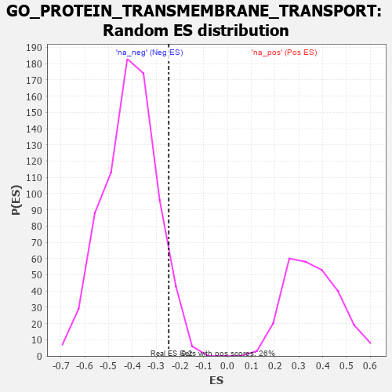

| | | Dataset | 7d |
| Phenotype | NoPhenotypeAvailable |
| Upregulated in class | na_neg |
| GeneSet | GO_PROTEIN_TRANSMEMBRANE_TRANSPORT |
| Enrichment Score (ES) | -0.24736077 |
| Normalized Enrichment Score (NES) | -0.60188913 |
| Nominal p-value | 0.93775374 |
| FDR q-value | 1.0 |
| FWER p-Value | 1.0 |
Table: GSEA Results Summary
 Fig 1: Enrichment plot: GO_PROTEIN_TRANSMEMBRANE_TRANSPORT
Fig 1: Enrichment plot: GO_PROTEIN_TRANSMEMBRANE_TRANSPORT
Profile of the Running ES Score & Positions of GeneSet Members on the Rank Ordered List
| PROBE | GENE SYMBOL | GENE_TITLE | RANK IN GENE LIST | RANK METRIC SCORE | RUNNING ES | CORE ENRICHMENT | | 1 | AIFM1 | | | 1072 | 0.469 | -0.0570 | No |
| 2 | PEX5 | | | 1313 | 0.427 | -0.0163 | No |
| 3 | SEC62 | | | 1539 | 0.385 | 0.0192 | No |
| 4 | DNLZ | | | 2012 | 0.303 | 0.0102 | No |
| 5 | PEX2 | | | 2056 | 0.298 | 0.0542 | No |
| 6 | C2CD5 | | | 2204 | 0.276 | 0.0816 | No |
| 7 | SRP54 | | | 2544 | 0.220 | 0.0756 | No |
| 8 | PEX1 | | | 2990 | 0.151 | 0.0447 | No |
| 9 | SEC63 | | | 3025 | 0.146 | 0.0646 | No |
| 10 | PEX10 | | | 3227 | 0.117 | 0.0587 | No |
| 11 | ROMO1 | | | 4320 | -0.063 | -0.0680 | No |
| 12 | RTN2 | | | 4537 | -0.102 | -0.0782 | No |
| 13 | CLU | | | 4889 | -0.174 | -0.0934 | No |
| 14 | PEX12 | | | 6115 | -0.510 | -0.1627 | Yes |
| 15 | PEX13 | | | 6255 | -0.557 | -0.0877 | Yes |
| 16 | PEX6 | | | 6605 | -0.713 | -0.0132 | Yes |
| 17 | ABCA1 | | | 7243 | -1.113 | 0.0915 | Yes |
Table: GSEA details [plain text format]

Fig 2: GO_PROTEIN_TRANSMEMBRANE_TRANSPORT: Random ES distribution
Gene set null distribution of ES for GO_PROTEIN_TRANSMEMBRANE_TRANSPORT